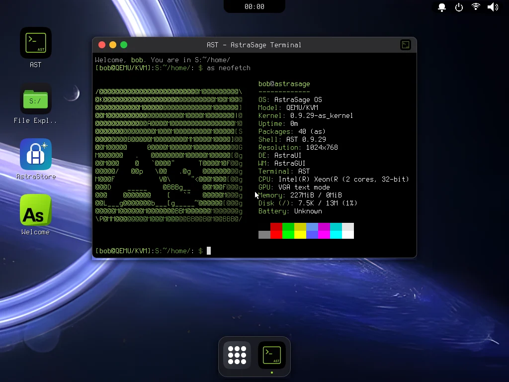
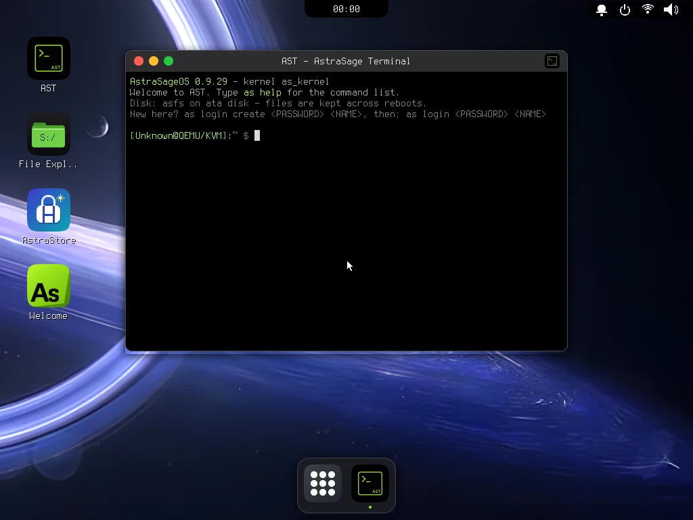
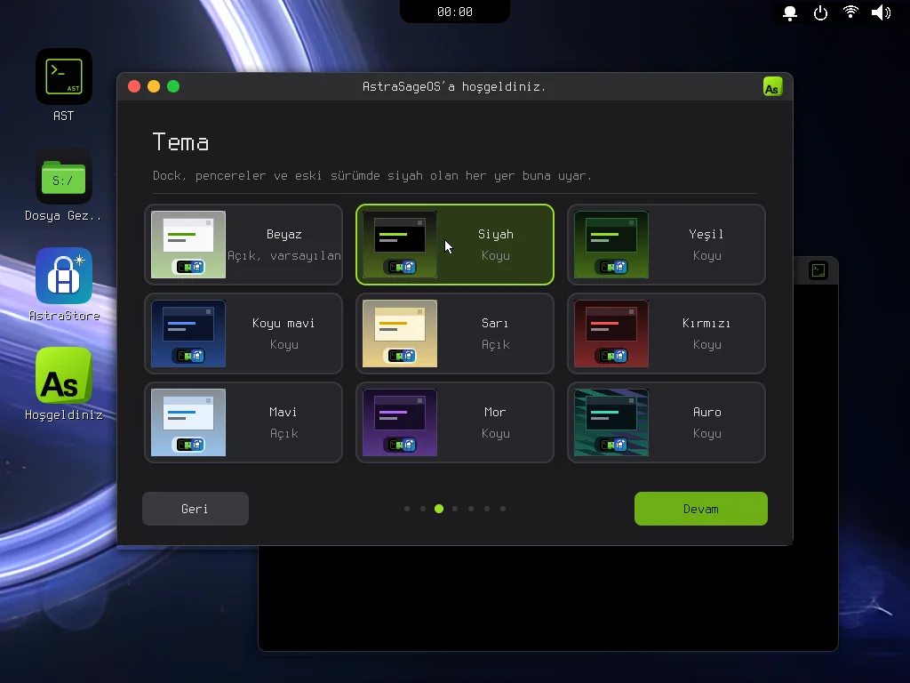
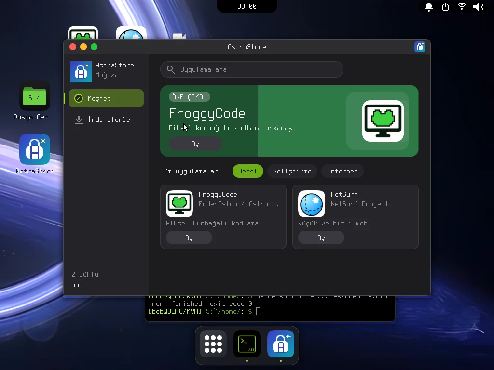
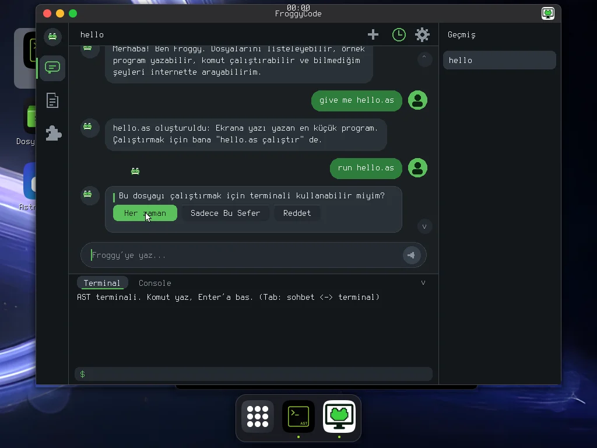
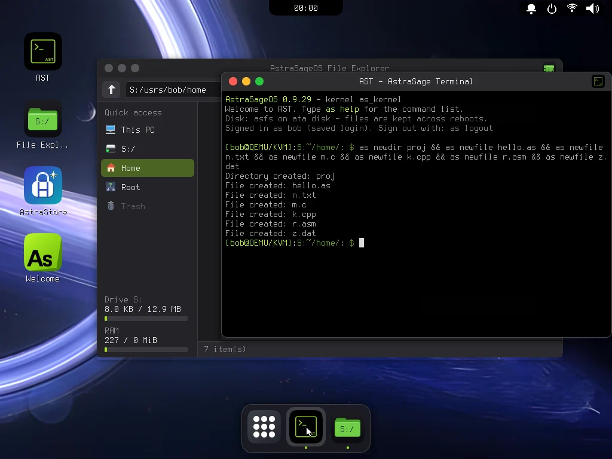
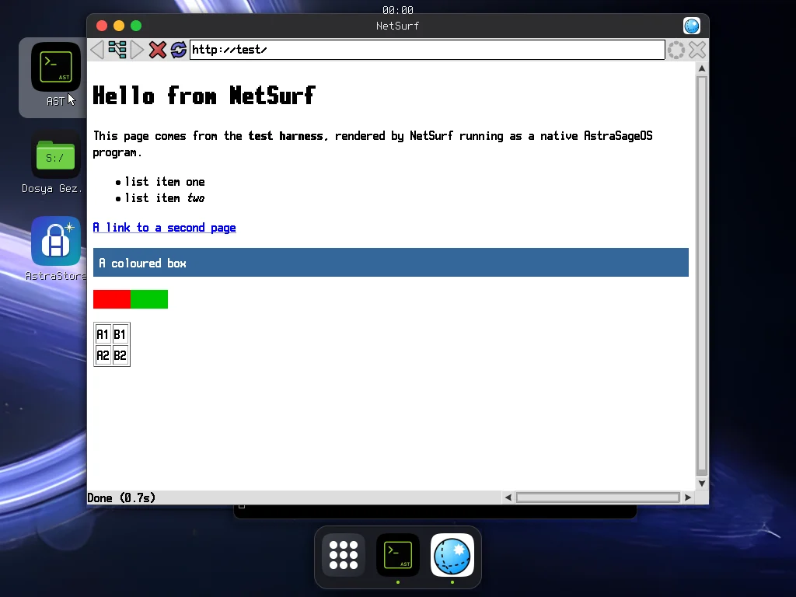

Sıfırdan yazılmış işletim sistemi.An operating system written from scratch.
Kendi çekirdeği (as_kernel), terminali (AST), paket yöneticisi (ASPI), dili (AstraScript) ve masaüstü arayüzü (AstraGUI) olan bir işletim sistemi. x86, x86_64, ARM64 ve ARM32 için. An operating system with its own kernel (as_kernel), terminal (AST), package manager (ASPI), language (AstraScript) and desktop (AstraGUI). For x86, x86_64, ARM64 and ARM32.

Altında Linux ya da BSD çekirdeği yok. Önyükleme, bellek, disk, ağ, ses, pencere sistemi ve uygulamalar bu projede yazıldı.No Linux or BSD kernel underneath. Boot, memory, disk, network, sound, the window system and the apps are all written in this project.
AstraSageOS neden farklı?Why AstraSageOS is different
Hazır bir çekirdeğin üstüne giydirilmiş bir dağıtım değil; baştan sona kendi işletim sistemi.Not a distribution dressed over an existing kernel; a complete operating system of its own.
Kendi çekirdeği: as_kernelIts own kernel: as_kernel
Bellek yönetimi, asfs dosya sistemi, ağ ve TLS, ses ve 32/64-bit native programlar çekirdeğin içinde.Memory management, the asfs file system, network and TLS, sound and 32/64-bit native programs live in the kernel.
- x86, x86_64, ARM64 ve ARM32 çekirdekleri aynı ISO'dax86, x86_64, ARM64 and ARM32 kernels on the same ISO
- AST terminali, kullanıcı girişi, neofetchAST terminal, user login, neofetch

AstraGUI ve 9 temaAstraGUI and 9 themes
Pencereler, dock, çentik, bildirimler ve dosya gezgini. Bir pencere dock'a ya da çentiğe değince onlar kenara çekilir, pencere gidince geri gelir.Windows, dock, notch, notifications and a file explorer. When a window touches the dock or the notch they slide out of the way and come back when the window leaves.
- Beyaz, siyah, yeşil, koyu mavi ve daha fazlasıWhite, black, green, dark blue and more
- Her temanın kendi duvar kâğıdıA wallpaper for every theme

ASPI ve AstraStoreASPI and AstraStore
Kendi paket yöneticisi ve uygulama mağazası. Paketler GitHub'dan iner, işlemciye göre ayrı arşivler vardır.Its own package manager and app store. Packages come from GitHub, with one archive per processor.
aspi install,update,upgrade- FroggyCode ve NetSurf mağazadaFroggyCode and NetSurf in the store

AstraScript ve FroggyCodeAstraScript and FroggyCode
Kendi programlama dili (.as) ve sohbet tarzı bir kodlama arkadaşı. Betikler GUI komutlarıyla pencere açabilir.Its own programming language (.as) and a chat-style coding companion. Scripts can open windows with GUI commands.
- Dosya oluştur, çalıştır, terminal ve eklentilerCreate files, run them, terminal and plugins
- NetSurf ile web tarayıcısıA web browser through NetSurf

as_kernel
Çekirdek, sürücüler, ağ, TLS.Kernel, drivers, network, TLS.
AST
Terminal ve komut kabuğu.Terminal and shell.
ASPI
Paket yöneticisi.Package manager.
AstraScript
Kendi dili, GUI komutlarıyla.Own language with GUI commands.
Ekran görüntüleriScreenshots
Siyah tema. Görüntüler gerçek arayüz kodunun test düzeneğinde çizdiği karelerdir; tıklayınca büyür.Black theme. These frames are drawn by the real GUI code in the test harness; click to enlarge.


AstraSageOS'u indirDownload AstraSageOS
Hangi işlemcide ne kadar denendiğini açıkça yazıyoruz.We state plainly what has been tested on which processor.
x86 STABLE
Limbo ve QEMU'da denendi.Tested in Limbo and QEMU.
x86_64 STABLE
Limbo'da denendi; 32-bit programlar uyumluluk kipinde çalışır.Tested in Limbo; 32-bit programs run in compatibility mode.
ARM64 EXPERIMENTAL
Ses, SVG, JavaScript henüz hiç çalıştırılmadı. Limbo ARM'da klavye/fare yok.Sound, SVG, JavaScript never run yet. No keyboard/mouse in Limbo ARM.
ARM32 EXPERIMENTAL
ARM64 ile aynı sınırlar.Same limits as ARM64.
04cea30ba9bb2929685358487315f5b059788e16cc821e1344350b41ffbcce5aec1a0160f6b732cc639154b44f33cbce2a553d3ade63e8b26d0daffaca09624aNasıl denenir?How to try it
Android'de Limbo ile ya da bilgisayarda QEMU ile.With Limbo on Android or QEMU on a computer.
- ISO'yu açın. İndirdiğiniz
.iso.xzdosyasından.isoçıkarın.Unpack the ISO. Extract the.isofrom the downloaded.iso.xz. - Makine kurun. x86 veya x86_64, en az 512 MB RAM, bir disk dosyası (qcow2) ve ISO'yu CD-ROM olarak verin; CD'den açın.Create a machine. x86 or x86_64, at least 512 MB RAM, a disk image (qcow2) and the ISO as CD-ROM; boot from CD.
- Hoş geldiniz. İlk açılışta kurulum sihirbazı dil ve tema sorar.Welcome. On first boot a wizard asks for language and theme.
- Ağı açın. Terminalde
as net dhcpyazın, sonraaspi onlineile paketleri görün.Bring the network up. Typeas net dhcpin the terminal, thenaspi onlineto list packages.
qemu-system-x86_64 -m 512 -cdrom AstraSageOS-0.9.29.iso -hda disk.qcow2 -boot d
PaketlerPackages
Paketler aspi-package-sage deposundan iner. İşlemciye göre ayrı arşivler vardır.Packages come from the aspi-package-sage repository, with one archive per processor.
aspi online # list what GitHub has aspi install NetSurf # install a package aspi update # refresh the list aspi upgrade # install newer versions aspi run FroggyCode # run a native program
| Package | SürümVersion | AçıklamaDescription |
|---|---|---|
| NetSurf | 3.11.0 | Web tarayıcısıWeb browser |
| FroggyCode | 2.0.0 | Kodlama arkadaşıCoding companion |
Farkı görmeye hazır mısın?Ready to see the difference?
ISO'yu indir, QEMU ya da Limbo'da aç.Download the ISO and open it in QEMU or Limbo.